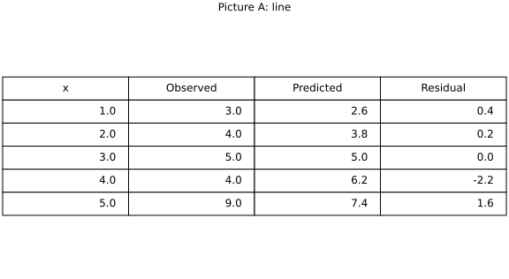
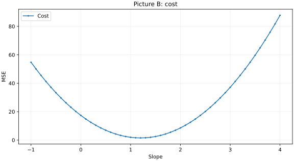
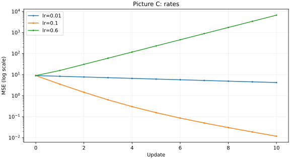
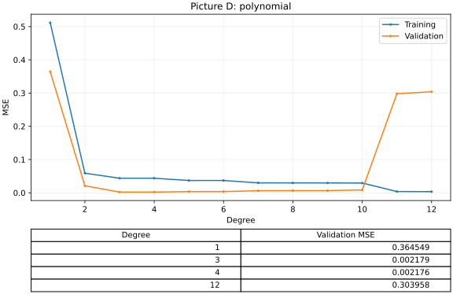
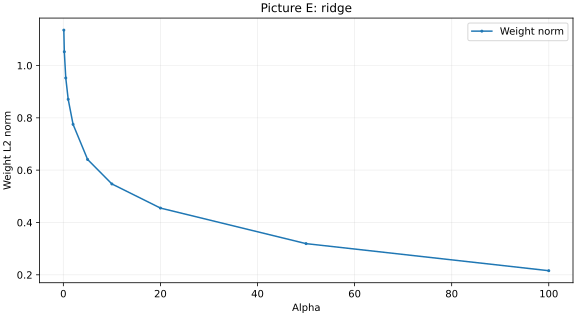

Nana puts five price cards, a ruler and a calculator on the table. Mina must fit a line before Tuktuk opens its notebook. Rafi will ask why the line was chosen and how its errors should be reported. Every answer needs a reason that another person can check.
Use this worksheet for a seventy-five-minute review of regression. Spend fifteen minutes reading pictures, twenty on hand calculations, fifteen tracing programs and twenty-five on coding and discussion. Keep full precision until the final displayed answer.
Have squared paper, a pencil and a basic calculator ready. Try the questions before reading the worked exam answers. Label target units, residual signs and the data partition used for each choice.
Picture A shows observed and fitted targets. At x=5, is the prediction too high or low? Calculate the gap after deciding its direction by eye.

Picture B traces MSE while holding the intercept at 1.4. Locate its bottom and explain what changes if the intercept moves.

Picture C compares three learning rates on the same centred five-point problem. Name the slow curve and the growing curve. Explain why repeated overshooting can become unstable.

Picture D compares polynomial degrees. Choose using the validation curve rather than the smallest training error. The true teaching rule is cubic, but the finite validation winner need not be degree three.

Picture E records the combined ridge coefficient norm with fixed standardised features. Describe the direction of the change and why it does not mean every individual coefficient moves monotonically.

These same computed panels appear in the first five quiz questions. Discuss what each horizontal axis represents before checking any answer.
The first six exam answers provide worked solutions. Award credit for intermediate sums, not only the final number. A correct-looking score from an incorrect unit or denominator needs correction.
Quiz code A tests cancellation of signed gaps. Code B follows two scalar gradient updates. Code C counts degree-three polynomial columns for two original features. Code D checks R² for perfect nonconstant predictions. Code E selects alpha using validation losses.
Before running a snippet, write the current values after each update or loop pass. Keep target order and prediction order aligned. For feature construction, separate the number of original inputs from the number of generated power and interaction columns.
The first coding task fits a line from input pairs and reports its parameters. Include a repeated-x case so your program has an explicit policy when no slope can be identified. The second computes regression metrics and handles the constant-target denominator deliberately.
Use the coding statements for exact input and output formats. Check the results against your paper work on a small dataset before trying longer inputs. Written practice asks you to justify degree selection and explain a limitation of a rent estimate.
A school reports a low average marks error. What further evidence would you request before using predictions to allocate support? Consider whether low-attendance students were represented, whether features are available before the decision and whether errors differ across meaningful groups.
A rent model improves its score after deleting the most expensive final-test flat. Explain why that is an invalid basis for a preprocessing choice. Then describe what domain evidence could justify handling a value differently before a fresh evaluation.
Compare ridge and lasso without claiming either discovers causal importance. Explain how feature units affect penalties and how correlated columns can exchange contributions.
Give yourself one mark for a correct setup and another for justified arithmetic on each short calculation. For the report, require data origin, units, baseline, partition roles and limitations. Return to the rent project if any of those pieces is missing.